South America · Argentina · Rosario
Rosario, November 2017
Rosario is a big city on the west bank of the Paraná River, in Santa Fe province, Argentina. I came by plane from Santiago, after Pucón, and stayed for several days in November 2017, in a hostel. I walked on the riverfront, ate at a restaurant I went to regularly, made empanadas in the hostel kitchen, spent a day at a beach on an island in the river and went to a festival on the bank. Then I took a train to Buenos Aires.
My conclusion up front: Rosario was a quiet stop between two big trips, and what I have photos of is a city that lives on its river. If you are looking for sights, this page will not give you many. Details below.
The times are my phone's clock, and Google Photos stores them in Argentine time (GMT-3). The boxes hold research I did in November 2026, each with a source and a date, so you can tell it apart from what I remember. The places are my reading of the photos and of the location Google Photos gives them, and I say so where I am not sure.
November 9: the riverfront
My first photos in Rosario are from Thursday, November 9, at 19:19. Google Photos pins them in Rosario, on the riverfront near the Parque de España cultural complex. I do not remember how I got from the airport to the hostel, what I paid for it, or what time I arrived.
The riverfront is a wide stone promenade with old street lamps, and next to it there is a big paved plaza where skaters, cyclists and people on roller skates meet at the end of the day. The purple trees in the background look like jacarandas, which bloom in spring. I blurred the faces of the people in this photo.
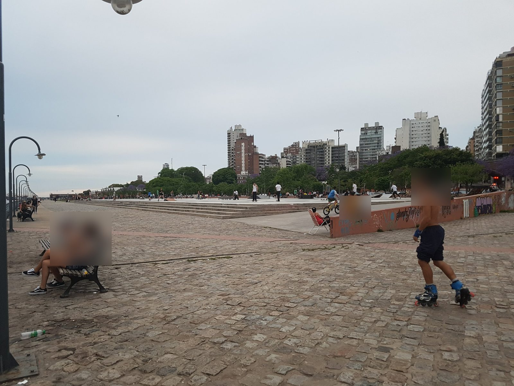
The same minute I turned to the river. The Paraná here is wide and brown, with low green islands on the other side, and a bulk carrier, a cargo ship for grain and similar loads, was moving along it in the evening light. At 19:26 I took another photo of the same ship from a higher railing, with a red brick building and a jacaranda in bloom below me on the right.
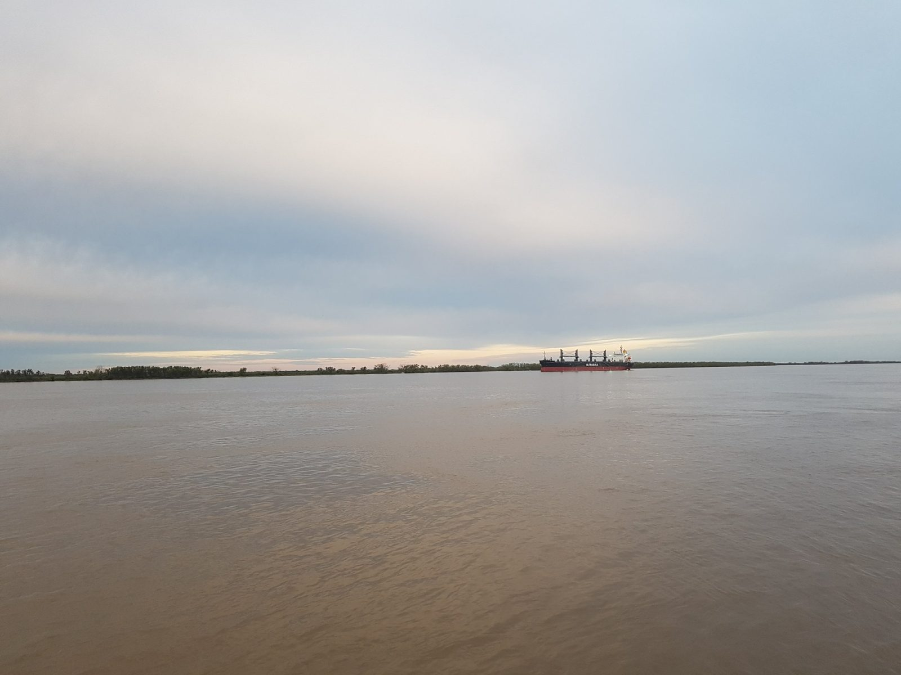
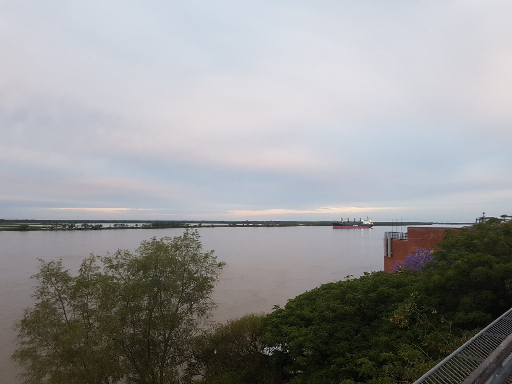
The hostel, the restaurant and the empanadas
I stayed at Be King Hostel. At 20:02 on the same evening I took a photo from a window of a restaurant I went to regularly. It was not far from the hostel, and each time I asked for mesa con enchufe, a table with a power socket, which in Spanish is how you ask for a place to charge your phone and laptop. They always sat me next to a window, and from there I looked down on a yard where people were grilling. A whole animal was on one of the two grills, and the benches around were painted turquoise. It was dark, so I did not get a clear photo, and I did not note what animal it was.
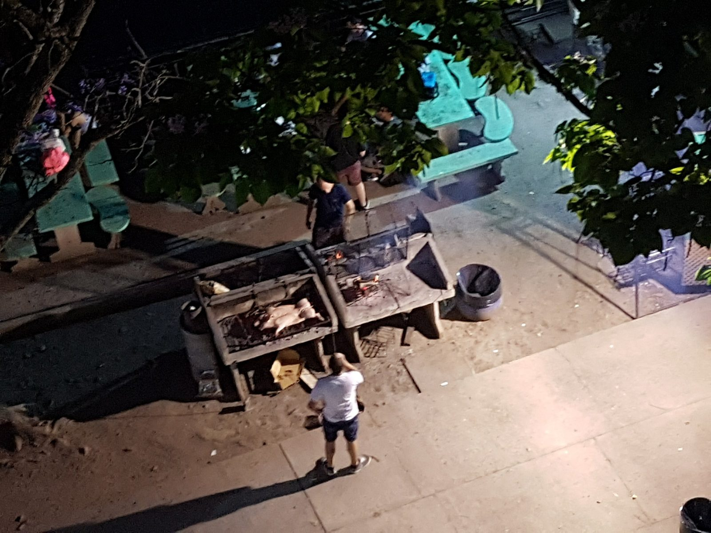
On Saturday, November 11, at 23:32, I made empanadas in the hostel kitchen. The photo shows about a dozen sealed ones, shaped with the twisted edge, and four discs with filling still waiting to be closed, next to a tub of the filling.
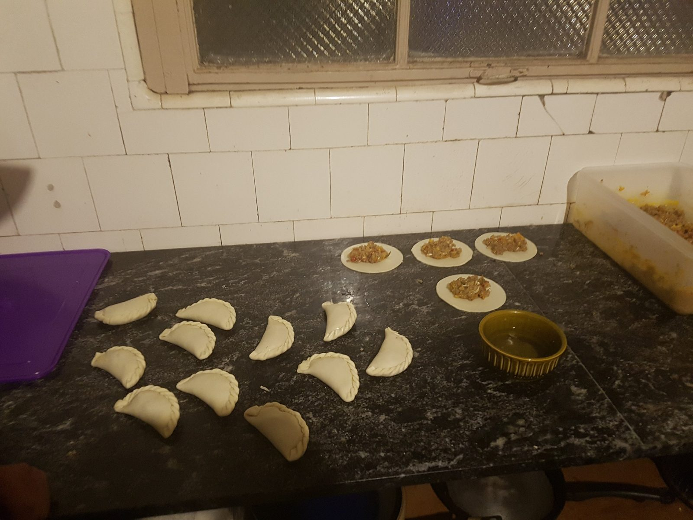
I gave a sweater to the owner of the hostel, as a gift. His wife also told me something I did not know: you could do a skydive through them, and it would cost much less than what I had paid in Bariloche. I did not do it in Rosario. The box below has what I found about the price.
What I know: I did not jump in Rosario, and I did not check the price at the time. I do not remember what I paid in Bariloche either, so I cannot confirm the comparison. It is something I was told, and I am passing it on as that.
What I found: a Rosario site that lists activities, last updated in August 2025, gives prices from two local operators. Paracaidismo Rosario: a tandem jump from 2,500 m for 195,000 pesos per person (valid only for groups with an even number of people) and from 3,000 m for 220,000 pesos. Salta en Rosario: a group promotion from 2,500 m for 208,000 pesos with a minimum of 2 people, a jump from 3,000 m with a hand camera for 235,000 pesos, and one with a camera operator for 353,000 pesos. The page says the prices come from the operators and may change (Disfruta Rosario, August 2025). The operator's own page says jumps are from 2,500, 3,000 or 4,000 m and bookings go through WhatsApp, and it shows no prices (Salta en Rosario).
What I did not find: any current price for a tandem jump in Bariloche, so I cannot say if Rosario is cheaper. I also did not find the airfield. Ask the operator before you plan around it.
Be King Hostel in Rosario appears on several hotel booking sites (Kayak). I could not open a booking page, so I cannot tell you whether it is open now, what the rooms cost or whether the owners are the same. This is a gap in what I could check, not a statement that it closed.
November 11: the Colectividades festival
At 18:22 on Saturday, November 11, I took a photo between two white tents on the riverbank, with a stage, strings of lights and the river behind it. A banner says Palestina, with the same word in Arabic, and a yellow sign at the right says Shawarma Club. I think this was the Encuentro y Fiesta Nacional de Colectividades, the yearly festival where the immigrant communities of Rosario run stands of their own. The photo is not pinned to a place, so this is my reading, from the stands and from the date. The stand in this photo belongs to the Palestinian community.
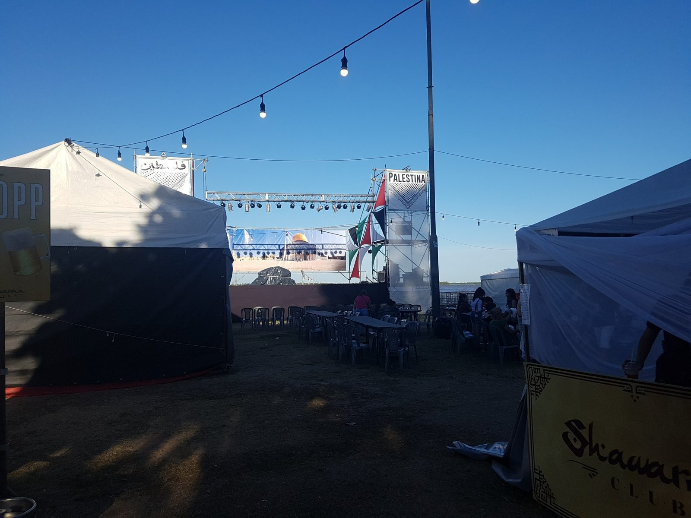
What I found: in 2026 it was the 42nd edition, from Friday, November 6 to Sunday, November 15, in the Parque Nacional a la Bandera, with more than 50 communities. Entry to the festival was free (La Capital, November 9, 2026). A Wikipedia entry says it is usually held in early November, in the park on the Paraná shore across from the Flag Memorial, with tents, kiosks and stages, where the communities sell typical food and drink (Wikipedia, undated).
What I did not find: the dates of the 2017 edition, which I cannot check against my photo, and the dates for 2027. If the festival matters to you, check the dates with the city before you book a flight.
November 12: a beach on an island
On Sunday, November 12, I went to a river beach that I reached by boat, a short crossing from the city. Google Photos pins the photos at Banquito San Andrés, on the islands across from Rosario (it shows the place under Villa Gobernador Gálvez). The boats leave from the Estación Fluvial, by the Flag Memorial. My first photo there is from 15:26, so I crossed before that, and I do not remember when. The island has a long sandy strip on the river side with motor boats pulled up to the shore, jet skis, tents and shade from willow-like trees. On the far side you can see the grain silos of the port.
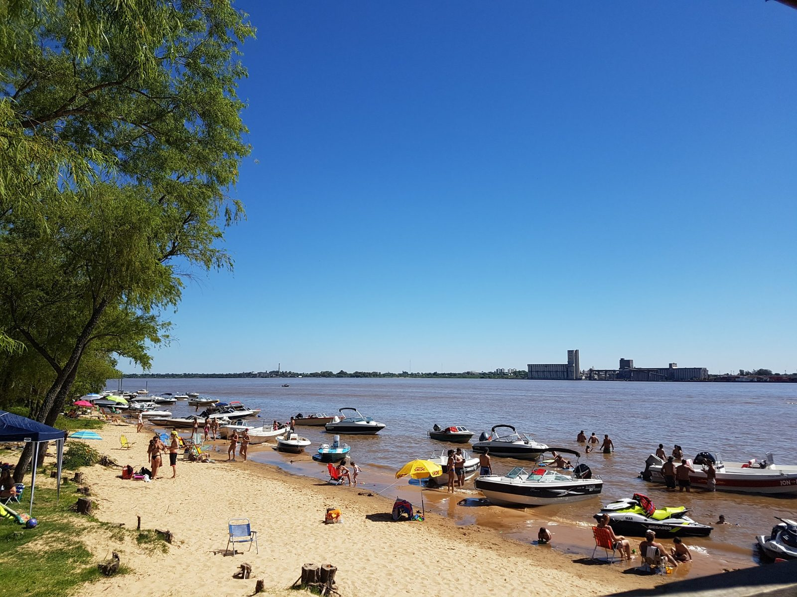
At 16:12 I took a selfie with three women under a wooden shelter. I blurred their faces, and I am not giving any names. At 16:26 I photographed a thin green snake crossing the wet sand. It was alone and it was not a story, I just did not expect to see one there. I do not know the species and I did not touch it.
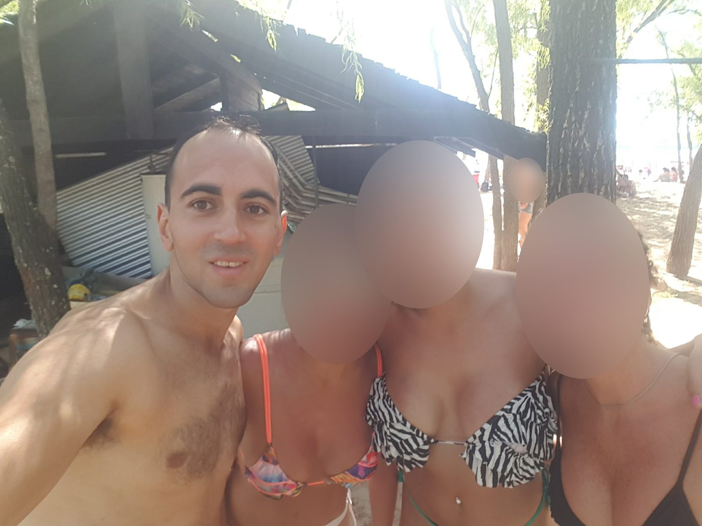
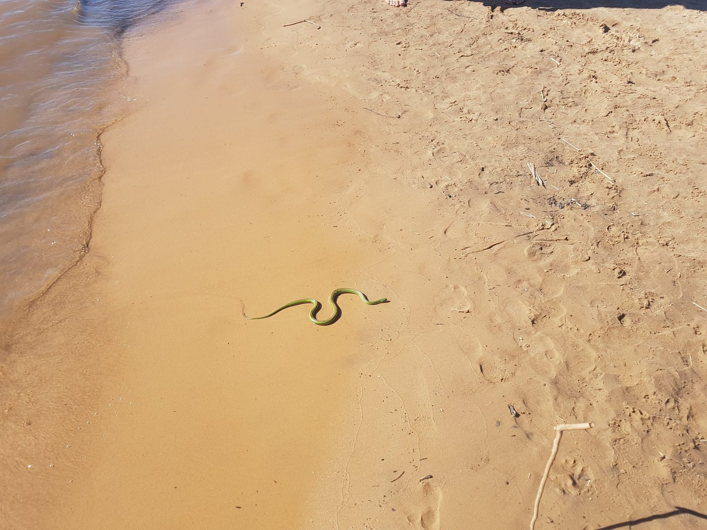
The light changed in the evening. At 18:44 I took a selfie sitting under a wooden structure with ropes, and at 19:29 another one, in silhouette, with the sun low over the river and a row of wooden posts in the water. At 19:29 I also took the sunset itself, with the posts of an old pier in front of the sun and a moored boat on the left, and at 19:38 and 19:42 the shore at dusk, with a small wooden gazebo and the skyline of Rosario in the distance on the other side of the river.
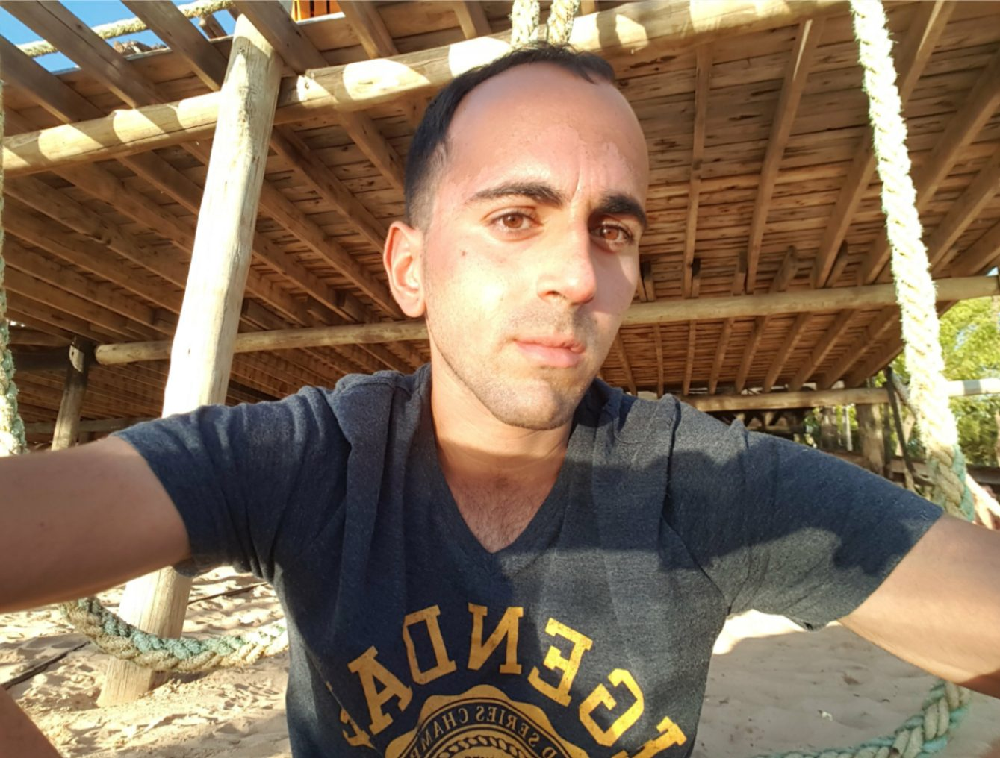
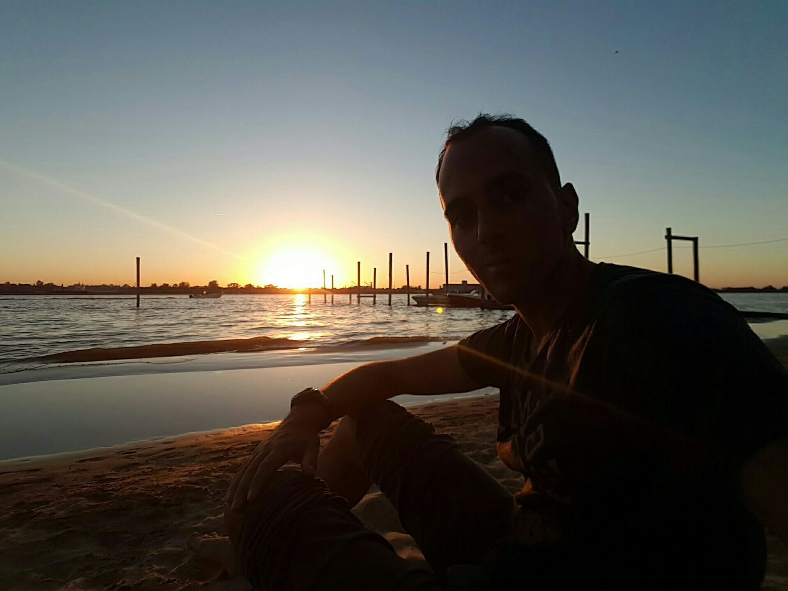
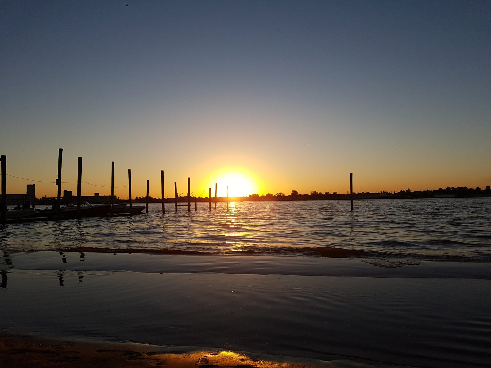
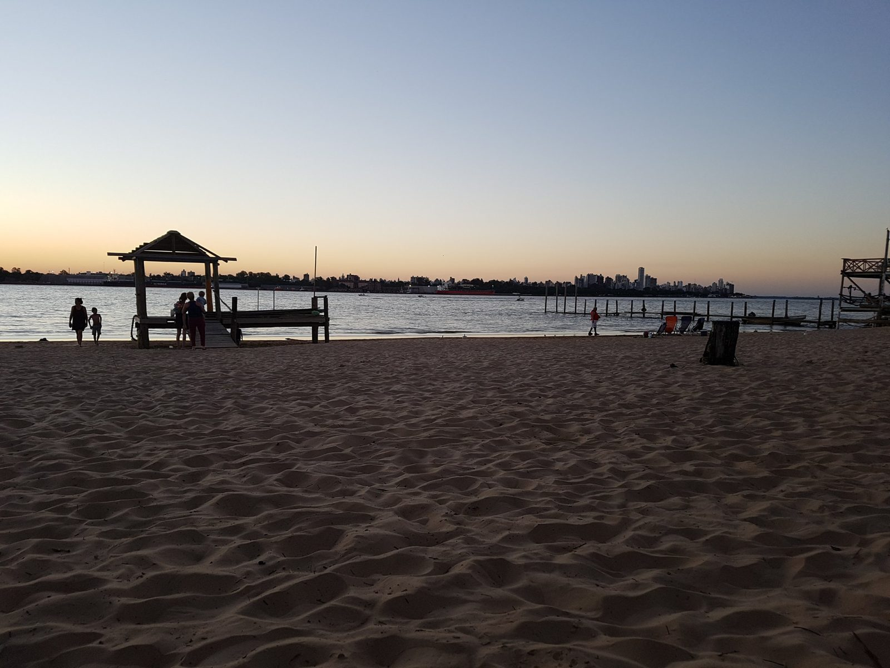
At 20:06 I photographed the way back: through dark willow branches, with the last orange on the horizon and a long, low boat moored at a wooden dock on the right, and the silhouettes of people waiting on the sand. I think it is the ferry, but I do not know if it was the last one of the day.
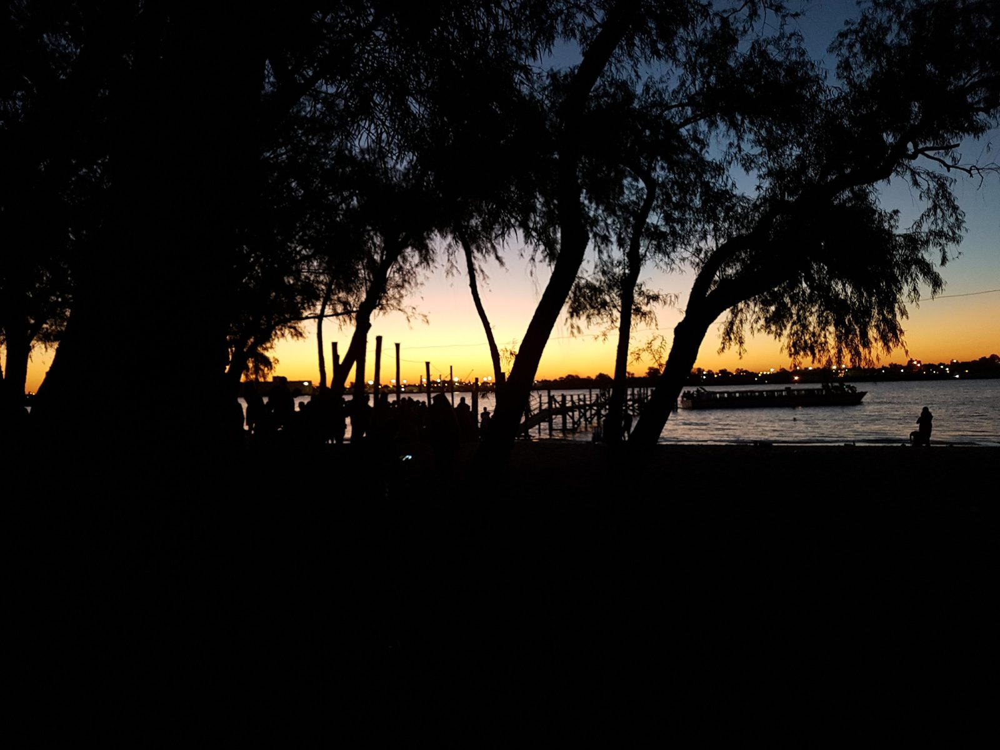
In 2017: an article from February 2017 said the boats left from the Estación Fluvial near the Flag Memorial, the crossing took about 15 minutes, an adult ticket cost 100 pesos, boats ran every hour from 10:00 and the last return was at 19:00 in December and 20:00 in January (La Voz de San Justo, February 17, 2017). That is February, not November, so I do not know the times of my own day, and I do not remember what I paid.
Now: an article dated October 9, 2025 said the season of crossings from La Fluvial to Banquito San Andrés started on Friday, October 10, at 11,000 pesos per person, up 57% from 7,000 the season before. Boats left every hour from 10:00, with the last departure at 16:00 (an hour earlier than the year before) and returns until 19:00, on Saturdays, Sundays and holidays until November 30 (La Capital, October 9, 2025). An article from January 30, 2026 said crossings ran every day in February, at the same 11,000 pesos including the round trip and the same hours (La Capital, January 30, 2026).
What I did not find: the schedule and price for the 2026 to 2027 season, which is the one that matters if you go soon. Check with the operators before you go, and take the last return time seriously.
November 13: the festival at night
My last photo in Rosario is from 01:52 on Monday, November 13, back at the Colectividades festival, long after the stands had closed. It shows two food stands on the paved ground in the dark: a big illuminated sign that says Shawarma with the Lebanese flag and the Iranian flag next to it, a booth marked Caja Líbano, and on the right a sign of the Iranian community of Rosario that also says Shawarma. I read this as the Lebanese and the Iranian stands, but I am going by the signs and not by anything I remember.
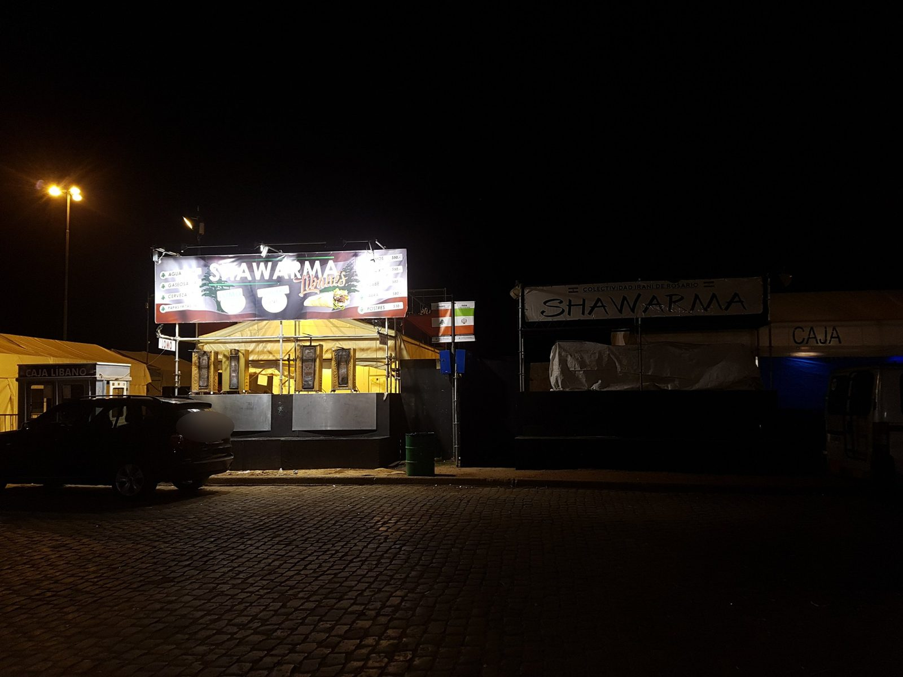
The train to Buenos Aires
I left Rosario by train to Buenos Aires. I do not remember the day, the time, the class, the price or the station I left from. My last photo in Rosario is from 01:52 on Monday, November 13, at the festival, and the next one is from Tuesday, November 14, at 18:19, a screenshot of a Coldplay ticket for the concert at the stadium of La Plata. So I left on Monday or on Tuesday, and I do not know which.
What I found: an article dated April 27, 2026 lists a daily Trenes Argentinos service between Retiro, in Buenos Aires, and Rosario Norte. Train 278 leaves Rosario Norte at 04:48 and arrives at Retiro at 12:22, about 7 hours 34 minutes, and the stops include San Nicolás, San Pedro, Zárate and Campana. It gives approximate prices of 13,000 pesos in first class and 16,800 in Pullman, with 10% off for online purchases (Canal 26, April 27, 2026).
Something to check: an article from January 7, 2026 said that from January 10 the Rosario trains would stop at Colegiales station, on Avenida Federico Lacroze, instead of Retiro, because of works on the railway, with a departure at 04:00 and arrival at 11:17, and no date for the return to Retiro (La Capital, January 7, 2026). The later article lists Retiro again, but I did not find an official statement on when that happened. Check the station and the time on the Trenes Argentinos site before you buy a ticket.
What I did not find: how the service looked in 2017, so I cannot compare.
What I think now
Rosario is an easy city to spend a few slow days in: a long riverfront, a big river, a festival in November and a hostel with a kitchen. If you want something to do, ask at your hostel. Mine told me about a cheaper skydive that I did not use. If you go in early November, check the dates of the Colectividades festival. If you take the train to Buenos Aires, check which station it goes to and the time, which has changed more than once.
What I do not remember
I do not remember how I got from the airport to the hostel, what I paid for the room, the name of the restaurant and what I ate there, what animal was on the grill, which day I left and which train I took, how much the ticket cost, the name of the ferry company or what I paid for the crossing in 2017, whether the boat in the evening photo was the last one, who the people in the beach photos were beyond the moment, or what I did on November 10 and during the daytime of November 13. I would rather leave these empty than make them up.